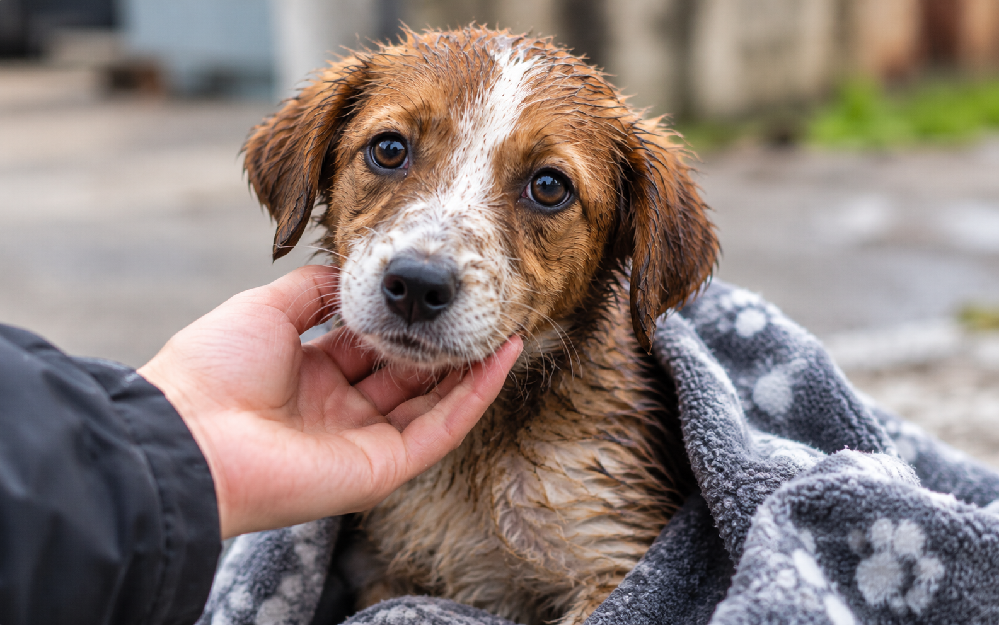
01 / RescateUna mano a tiempo
El primer paso hacia una vida segura.
Rescatamos vidas. Conectamos corazones.
Rescatamos, cuidamos y acompañamos a perros y gatos hasta encontrar una familia que los quiera para siempre.
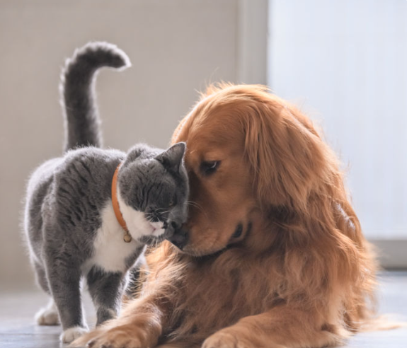
♡ Su próxima historia puede empezar contigo.
Adoptar es sumar una vida a la tuya.

01 / RescateEl primer paso hacia una vida segura.
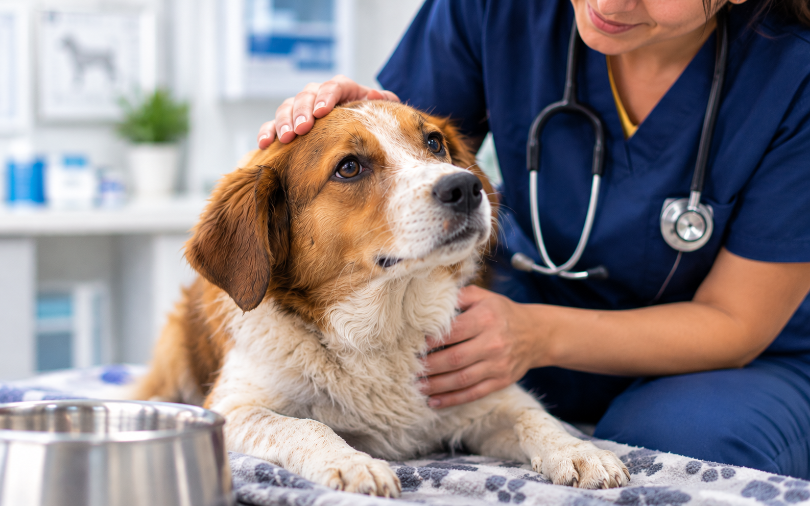
02 / CuidadoSalud, paciencia y mucho cariño.
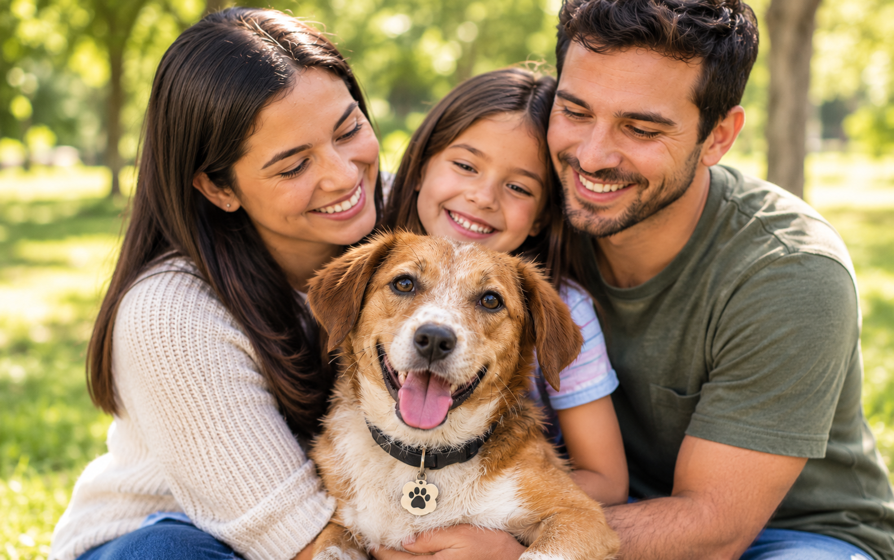
03 / AdopciónUna familia para toda la vida.
El primer paso hacia una vida segura.
Salud, paciencia y mucho cariño.
Una familia para toda la vida.
Somos una red de personas que rescata, ofrece atención veterinaria y promueve la adopción responsable. Con tu ayuda, cada historia puede tener un final feliz.
Conoce a tu próximo compañero de vida.
Encuentra a tu amigo →Tu aporte se convierte en alimento y salud.
Haz una donación →Regala tu tiempo. Recibirás mucho cariño.
Súmate al equipo →Estamos aquí para escucharte y orientarte.
Hablemos →“Adoptar a Coco nos llenó la casa de alegría. El equipo nos acompañó con mucho cariño en cada paso.”María y Andrés Familia de Coco · Adoptado
“Gracias a Patitas Felices, Lucas encontró un hogar donde la aman y cuidan. ¡No podemos estar más felices!”Carla y Tomás Familia de Lucas · Adoptado
Rescatar y proteger a perros y gatos en situación de abandono, brindarles atención integral y encontrar familias responsables que los amen para siempre.
Construir una comunidad donde cada animal viva con dignidad, cuidado y amor, y donde la adopción responsable sea siempre la primera opción.
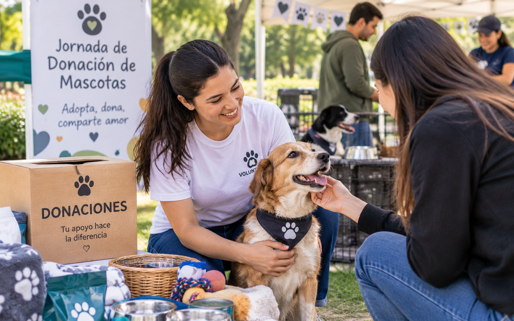
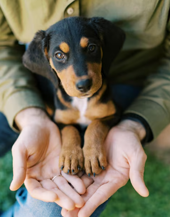
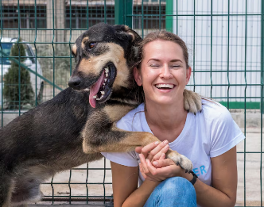
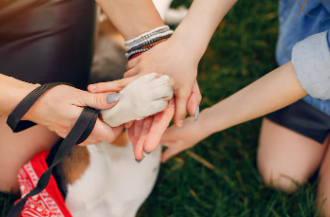
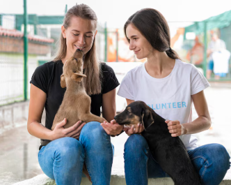
Conoce a nuestros perros y gatos. Algunos ya encontraron su hogar; otros esperan el tuyo. Adoptar es un compromiso para toda la vida.
8 amigos · 5 disponibles · 2 en proceso · 1 final feliz
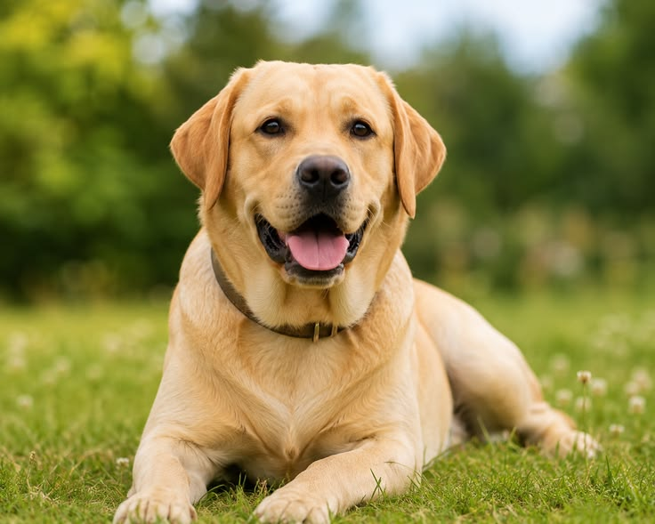
Perro · Mediano · Labrador retriever
Disponible Ver perfil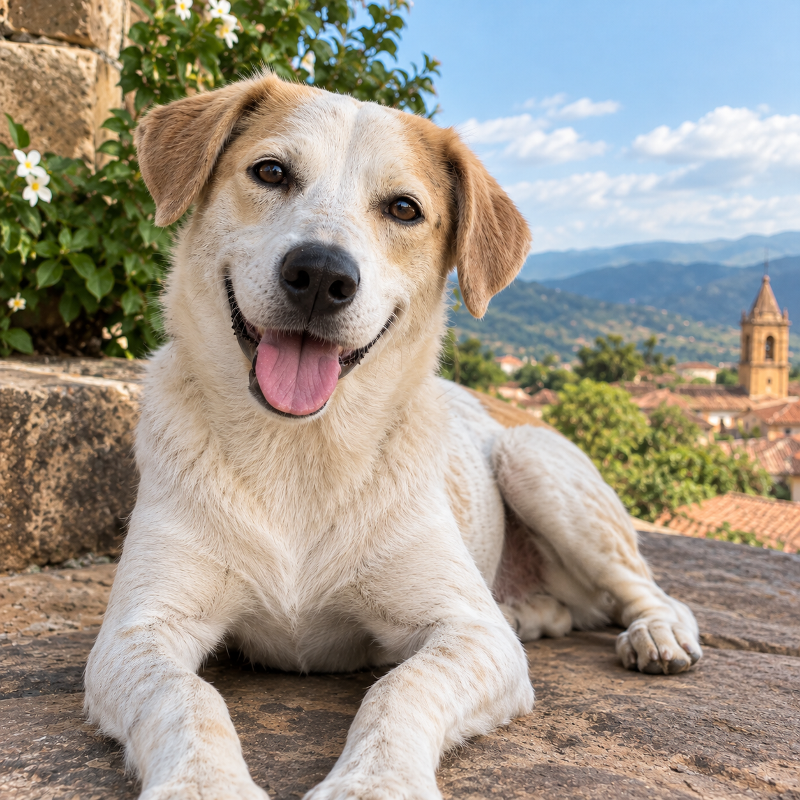
Perro · Pequeño · Criollo (Mestizo)
Disponible Ver perfil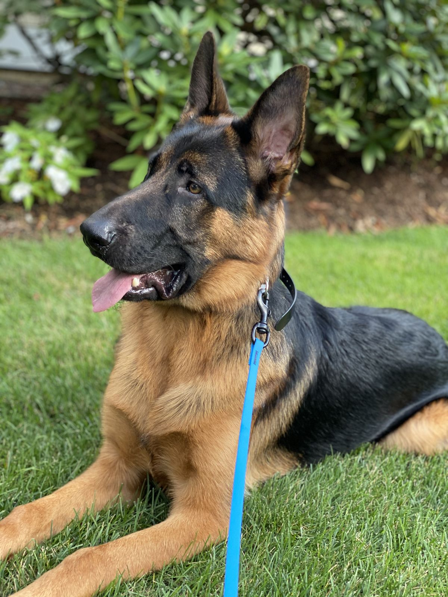
Perra · Grande · Pastor Alemán
Disponible Ver perfil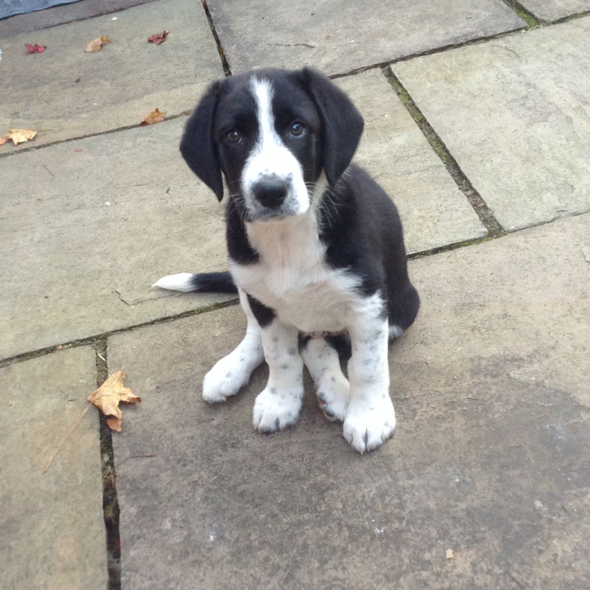
Perra · Pequeña · Criolla (Mestiza)
En proceso de adopción Ver perfil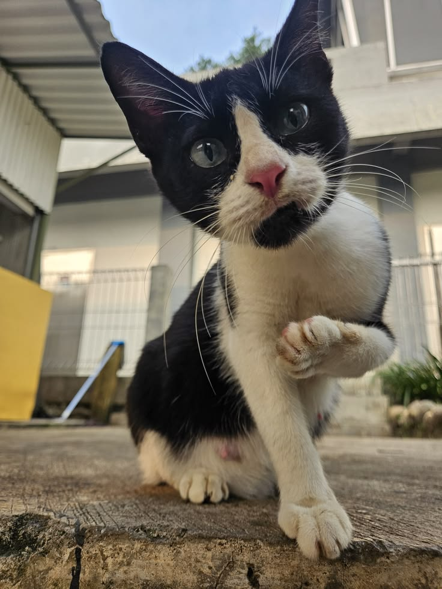
Gato · Mediano · Criollo (Mestizo)
Disponible Ver perfil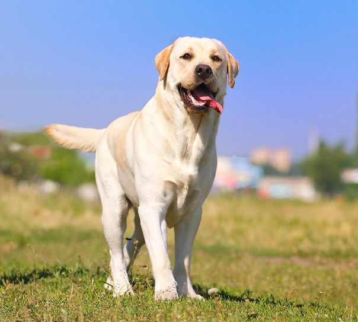
Perro · Grande · Labrador
Disponible Ver perfil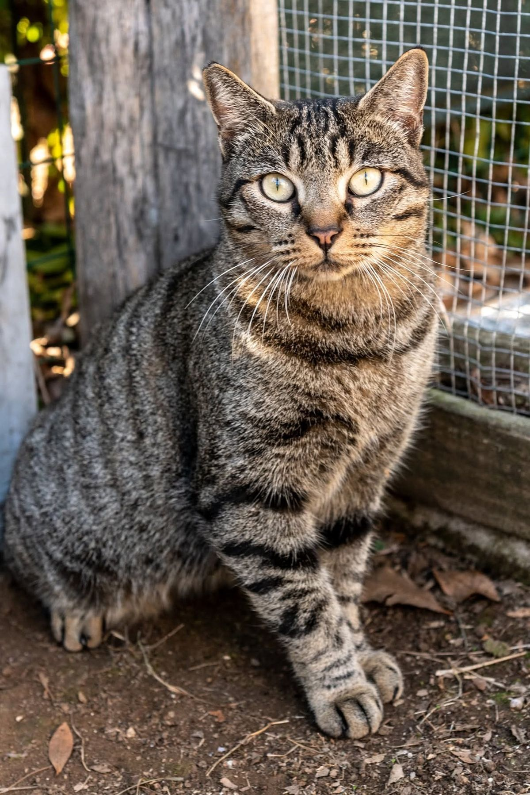
Gato · Mediano · Criollo (Mestizo)
En proceso de adopción Ver perfil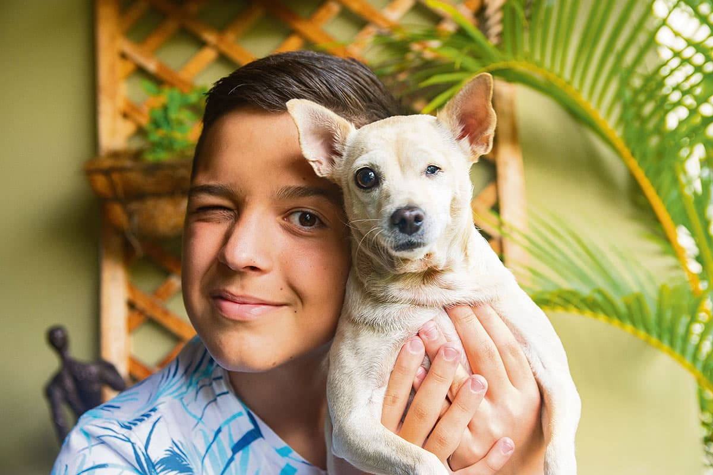
Pequeño · Mestizo
Adoptado Ver perfil¿Quieres adoptar, donar o ser voluntario? Déjanos un mensaje y demos juntos el siguiente paso.